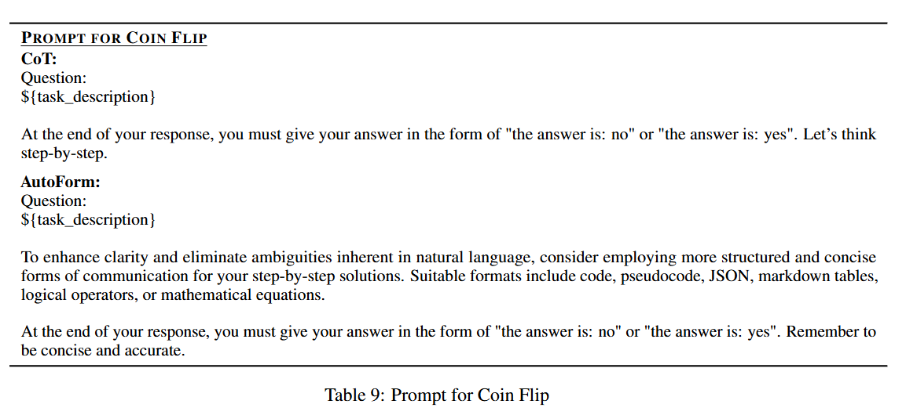
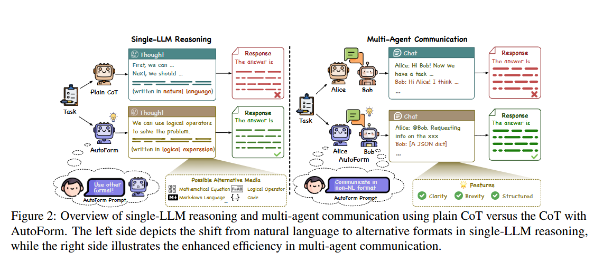
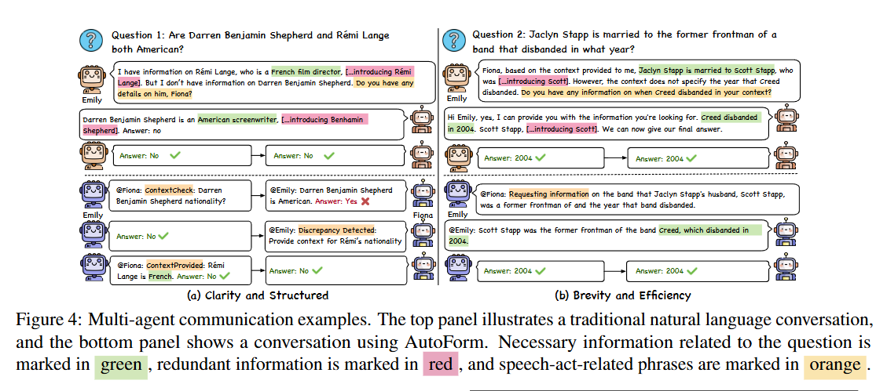
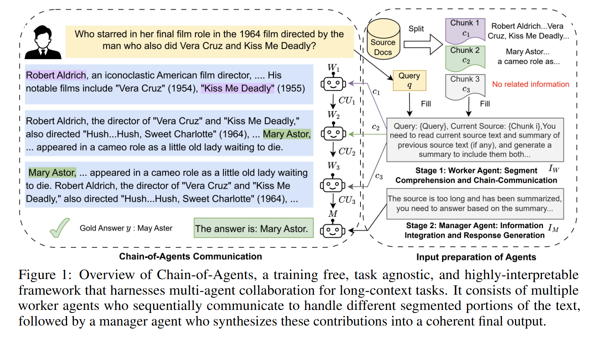
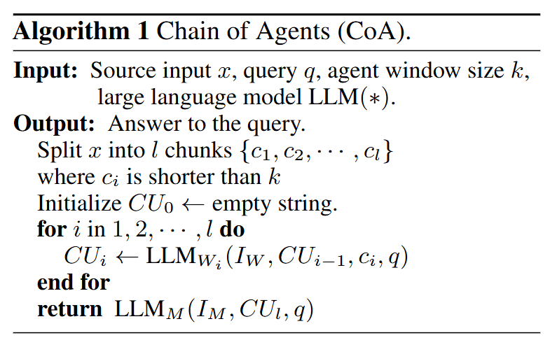

读paper15-Multi-Agent
读paper15-Multi-Agent
Communication
Beyond Natural Language: LLMs Leveraging Alternative Formats for Enhanced Reasoning and Communication
https://arxiv.org/abs/2402.18439
对于CoT，会首先引导模型生成思维集，然后基于此集合生成回复，但其使用的思维模式通常不会指定且使用自然语言，所以针对此进行改进。
该研究假设，结构化数据格式（如 JSON、markdown 表格、列表）或符号表示法（如逻辑表达式、数学公式）等各种格式有可能产生更精确、更有效的推理，并简化交流。
具体来说，对于单 LLM 推理，我们在原有的 CoT 提示中添加了鼓励使用非 NL 格式的指令。在多代理场景中，也会添加类似的格式决策指令。

为了提高清晰度并消除自然语言中固有的歧义，请考虑采用更有条理、更简洁的交流形式来逐步提供解决方案。合适的格式包括代码、伪代码、JSON、markdown 表格、逻辑运算符或数学公式。在回答的最后，您必须以 “答案是：否 ”或 “答案是：是 ”的形式给出答案。切记简洁准确。

同时文中也提到了该格式的LLM生成内容的一些特点：

清晰和结构。所选格式的一个重要特点是强调清晰度。LLM 始终倾向于采用便于进行明确、直接交流的格式，这在我们的多代理场景中至关重要。在这些场景中，代理拥有不同的知识集，因此清晰地交换这些不同的信息是必不可少的。结构化格式也很普遍，它提供了一种有组织的信息展示方法。这些格式提高了内容的可理解性和可访问性。与使用 NL 相比，我们发现由 LLM 决定的格式往往更直接、更清晰，从而有效减少了冗余。
简洁高效。另一个主要特点是注重简洁，提高交流效率。LLM 选用的格式往往省略了寒暄或情感表达等元素，使交流简洁明了。这种简洁性节省了计算资源，使对话集中在手头的任务上，优化了交流过程，从而实现更快、更高效的信息交流。这在需要快速有效决策的场景中尤为有益
Theory of Mind for Multi-Agent Collaboration via Large Language Models
文中提到了Multi-Agent在推理游戏表现不如单个LLM的两个因素：
- 长语境和复杂逻辑
- 幻觉
所以问题的关键还是解决在长上下文的情况下如何提高对有效信息的attention或者在特定模型水平下采取某种策略来缩短上下文，或者采取某种方式对prompt进行压缩。以及针对幻觉的，信息不对称的解决方式。所以问题还是回到了如何进行高效的信息交换。
Organization
Chain of Agents: Large Language Models Collaborating on Long-Context Tasks
https://arxiv.org/abs/2406.02818
该研究提出的框架思路如下：针对长上下文，将其切分为多个chunk，将其一次分配到agent链上，位置靠前的agent处理chunk并将当前chunk的结果输出到链上的下一个agent进行推理，最终生成一个推理结果。

图 1 显示了代理链（CoA）框架概览，其中包含两个阶段。在第 1 阶段，长上下文被分割成若干小块，每个小块可由一个工作代理处理。然后，通过交错阅读和推理来处理整个输入，工作代理按顺序进行通信，生成整个上下文的信息。在第 2 阶段，管理代理会收集工作代理链推导得到的知识，生成最终答案。逻辑如下：

图 1 左侧强调了工作人员之间协作交流的必要性，以便有效处理复杂的长语境推理任务。我们观察到：1）虽然在给定 c1 的情况下问题无法回答，但 W1 生成了对回答问题有用的相关证据；2）有了前一个工作者的部分答案，W2 进一步与当前来源进行推理，以完成跨代理的完整推理链，并生成解释性推理链；3）W3 在块 3 中没有找到相关信息，它直接重写了 CU2，将正确答案作为 CU3 的第一个标记，而没有添加任何无关信息。这表明，如果工作者是独立的（如树形结构通信），则不可能在第一跳的答案被另一个工作者掌握的情况下回答第二跳。
该怎么评价呢
对于复杂代码项目的代码生成来说是一个提高准确率的方法，但是感觉响应性不会很好，而且最主要的问题是这个 worker 的过程就是无法并行的，那么为什么不直接使用单个模型，将上一步总结的内容作为下一次与LLM交流的内容呢
或者说，可以先并行的处理每一个chunk，然后依次使用前一个agent的结果对当前agent的结果进行纠正。
Iterative Experience Refinement of Software-Developing Agents
https://arxiv.org/pdf/2405.04219
Experiential Co-Learning of Software-Developing Agents
https://arxiv.org/pdf/2312.17025